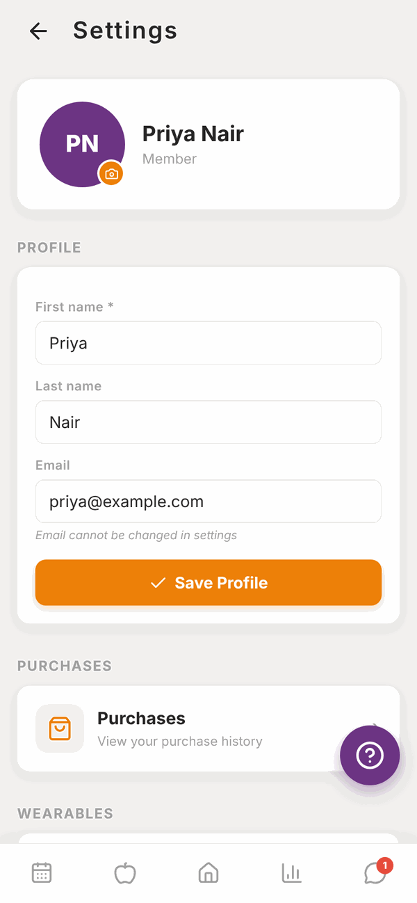
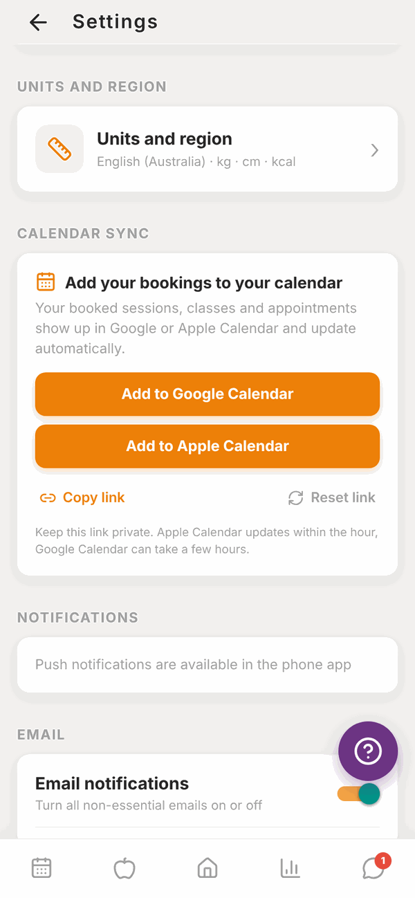
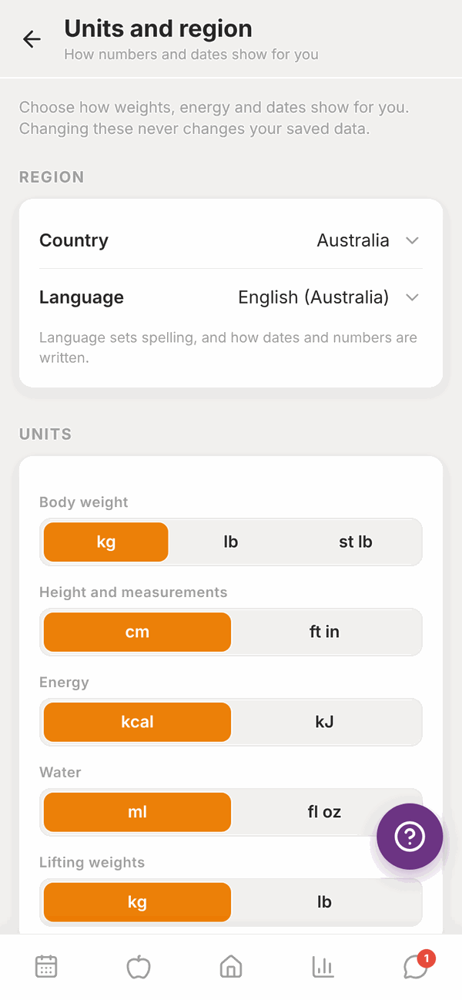
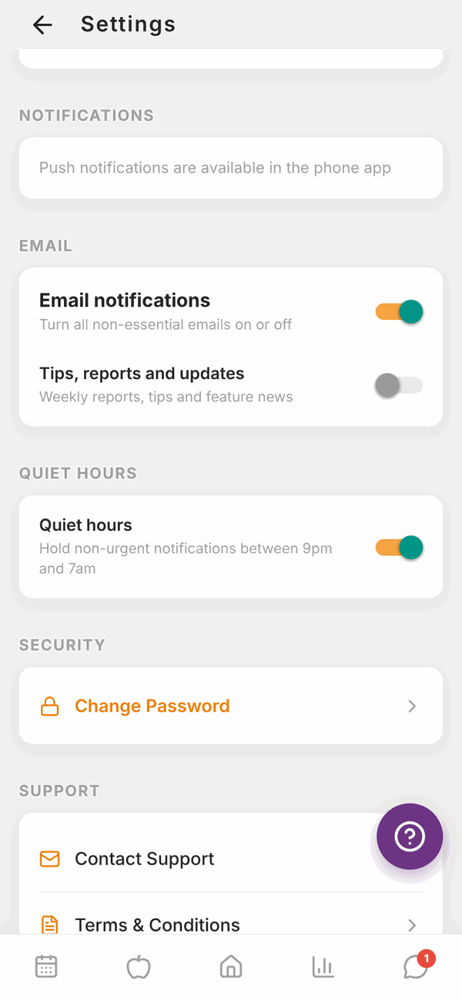
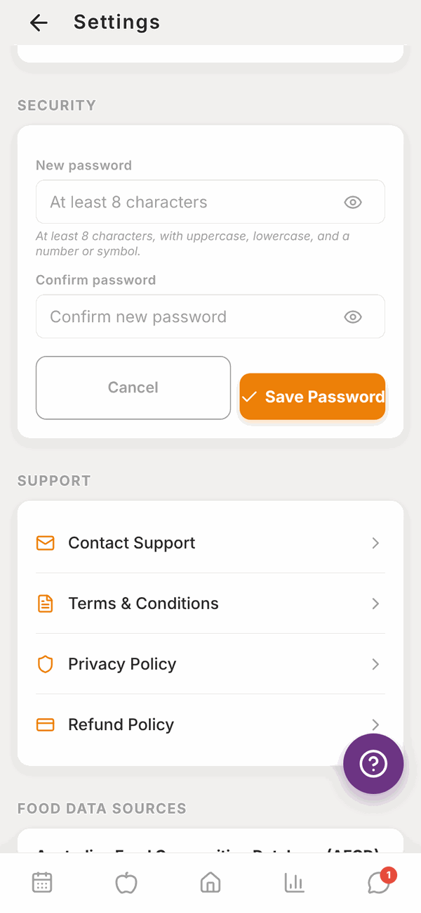
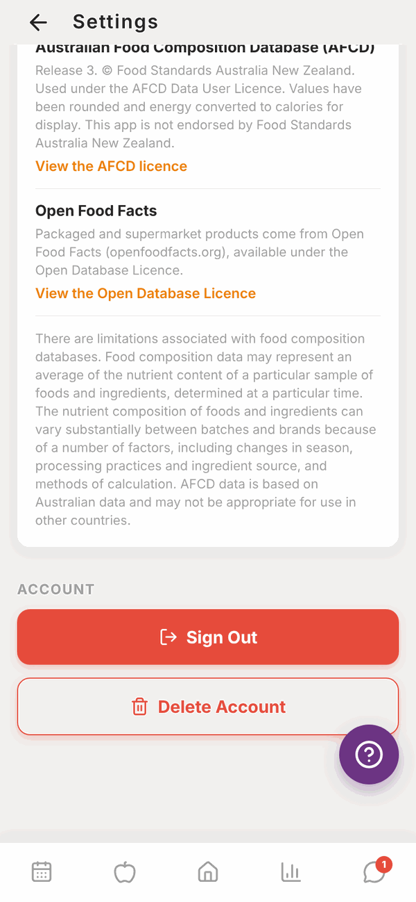
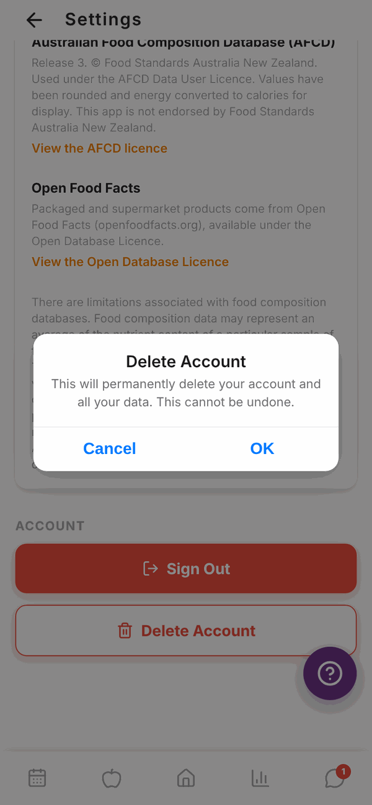

Totality for clients
Settings
Change your name and photo, units, calendar sync, notifications and password, get support, sign out, or delete your account.
On Home, scroll to MORE and tap Settings.

Your profile#
At the top is your photo (or your initials), your name and Member.
- Change your photo: tap the small camera button on your photo, pick a photo, and it saves.
- Change your name: edit First name and Last name, then tap Save Profile. First name can't be empty.
- Email is shown but can't be changed here. Ask your trainer or gym, or email admintotality@gmail.com.
Purchases and wearables#
- Purchases opens your Payments screen. See Payments.
- Wearables connects Apple Health or Health Connect. See Wearables.
Units and region#
Tap Units and region to choose how numbers and dates show for you. Changing these never changes your saved data, it only changes how it's shown.


- REGION: your Country, and Language (which sets spelling and how dates and numbers are written). Tap Use [country]'s usual units to set everything to match your country in one go.
- UNITS: Body weight (kg, lb, st lb), Height and measurements (cm, ft in), Energy (kcal, kJ), Water (ml, fl oz), Lifting weights (kg, lb) and Distance (km, miles).
- DATES AND TIME: Week starts on (Monday, Sunday or Saturday) and Time (12 hour or 24 hour). Today looks like shows an example.
Changes save as soon as you tap them.
Calendar sync#
Put your PT sessions and class bookings into the calendar on your phone. They update by themselves when things change.
- Under CALENDAR SYNC, tap Add to Google Calendar or Add to Apple Calendar.
- Your calendar app opens. Confirm you want to subscribe.
Or tap Copy link (on the website) or Share link (in the app), and paste the link into your calendar app under "Subscribe" or "Add calendar from URL".
Apple Calendar updates within the hour. Google Calendar can take a few hours.
Keep the link private, because anyone with it can see your bookings. If you shared it by mistake, tap Reset link. The old link stops working, and you add Totality to your calendar again.
Notifications#

Tap a switch to turn it on or off. It saves straight away.
NOTIFICATIONS (push, in the phone app only):
- Push notifications: turns all push notifications on or off.
- Messages from my trainer: when your trainer sends you a message.
- Programme updates: when your trainer updates your programme.
- Class reminders: reminders before classes you've booked.
- Check-in reminders: your weekly check-in reminder, by push and email.
On the website this section says Push notifications are available in the phone app.
EMAIL:
- Email notifications: turns all non-essential emails on or off.
- Tips, reports and updates: weekly reports, tips and feature news.
QUIET HOURS:
- Quiet hours: holds non-urgent notifications between 9pm and 7am.
Change your password#
- Under SECURITY, tap Change Password.
- Type a New password: at least 8 characters, with uppercase, lowercase, and a number or symbol.
- Type it again in Confirm password.
- Tap Save Password. You'll see "Password updated".

Forgot your password and can't log in? Use Forgot Password? on the log in screen. See Your invite and first log in.
Support and legal#
Under SUPPORT:
- Contact Support opens an email to admintotality@gmail.com.
- Terms & Conditions, Privacy Policy and Refund Policy open the full documents.
FOOD DATA SOURCES lists where the food information comes from: the Australian Food Composition Database (AFCD) and Open Food Facts.
Sign out#
Scroll to the bottom and tap Sign Out. You'll need your email and password to log back in.
Delete your account#
- Scroll to the bottom of Settings.
- Tap Delete Account.
- Read the warning: it permanently deletes your account and all your data, and can't be undone.
- Tap Delete My Account to go ahead (on the website, OK). Or tap Cancel.
- You'll see "Account Deleted" and you're signed out.


If you can't log in to delete your account, email admintotality@gmail.com from your account's email address and ask us to delete it.
Questions#
I changed units. Did my old numbers change?
No. Totality stores everything the same way and just shows it in your new units. 80 kg shows as 176.4 lb, for example.
How do I stop all emails?
Turn off Email notifications. Important emails, like password resets and failed payment notices, still come through.
I'm not getting push notifications.
Push only works in the iPhone and Android apps. Check Push notifications is on here, check your phone allows Totality to send notifications, and check Quiet hours isn't holding them.
Can I change my email address?
Not in Settings. Ask your trainer or gym, or email admintotality@gmail.com.
What's the difference between Sign Out and Delete Account?
Sign Out just logs you out on that device. Everything stays. Delete Account removes your account and data for good.
Where's the privacy policy?
In Settings under SUPPORT, tap Privacy Policy. There's also a link at the bottom of your Home screen.